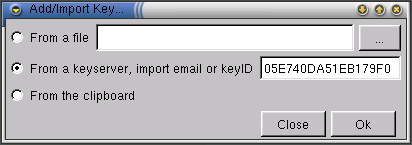

Key Management - Adding / Importing a Key
This section deals with two concepts: Generating your own pair of keys,
and importing other's keys.
Generating a Key Pair
To generate your own key pair, go into Key Management -> Generate Key
Pair... This will lead in your encryption program's method for generating
new keys.
Importing Keys
To import someone else's key, there are three methods:
- Getting them from a keyserver
- Getting them from the clipboard
- Getting them from a file

You can select any of these three from the Key Management -> Import Key...
menu item. You can also right-click on a specific key and select Import
Key... to import that specific key.